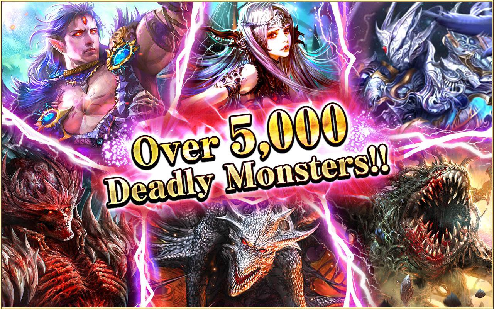

Optimize the live system. Build the structure that was missing. Keep it stable long-term.
Dark Summoner was a mobile RPG already in live operation when I joined GihOt Studio. Not a project I built from scratch — this was a running product, with real players, real content cycles, and real problems quietly building up underneath.
My role was Live Ops Designer — not to architect core systems, but to ensure what was running continued to run better. The work required reading the previous designer's decisions, identifying what needed fixing now, and laying groundwork so future updates wouldn't create new problems.
Live events had been running long past their design lifespan without mechanical updates. Players knew the outcome before they started — zero engagement.
Reward ladders no longer reflected player time-effort investment. Some modes over-rewarded, others under-rewarded — no internal system maintained the balance.
The Game Design team had no shared metric set to evaluate designs against. Every decision was gut-feel — no objective reference point existed.
New heroes and content were added by estimation, with no clear formula from the previous designer. Each new update introduced unpredictable balance risk.
Analyzed each live event along two axes: engagement mechanics and reward structure. For events that had lost engagement, I redesigned trigger conditions, added secondary loops with real value, and readjusted reward flow to match the current game phase.
💡 Principle: Events lose engagement not because rewards are too low — but because the mechanics have become too familiar. Change the loop, not just the number.
Audited the interface of key systems to identify friction points: hidden reward information, unclear tier thresholds, inconsistent feedback. Restructured reward ladders in select systems to create cleaner progression perception — so players knew exactly what they were earning and what came next.
🎯 Clarity before complexityCreated an internal metric set so the Game Design team had a shared foundation when evaluating new designs. The framework covered: engagement benchmarks by system type, reward density standards by game phase, and a pre-launch event review checklist.
📊 Why this mattered: Without a framework, each designer held a different standard. The result was inconsistent designs and prolonged reviews. A framework creates a shared language.
This was the hardest part. The previous designer left no documentation on how they calculated hero stats and power scaling. I analyzed each existing hero — stats, skills, cost — and gradually reconstructed the original formula from patterns in the data.
The output was a reusable spreadsheet for designing new heroes within relative power budget — maintaining consistency even though I hadn't created the original system.
⚖️ Reconstructed from patterns, not documentationLive events could be updated and deployed faster once the team had clear structure to work from.
The metrics framework created shared standards — faster reviews, fewer gut-feel debates.
The balance formula meant future heroes could be designed correctly from day one, not patched post-launch.
Read before writing. When inheriting a live product, the first task is understanding the previous designer's intent — even without explanation. Every system has logic, even when undocumented.
Structure is a feature. The metrics framework is invisible to players. But it affects every design decision that follows. Sometimes the most important work is the work that can't be seen.
Constraints clarify priorities. Not being able to redesign the whole game was a constraint. But it forced clarity: what needs fixing now, what can wait. This is a necessary skill for any live product.